3 描述数据 3 Describing Data
3.1 引言 3.1 INTRODUCTION
如果说统计学这门学科有一个核心概念，那便是变异性。在医学领域，我们最明显地看到这一点体现在人们生理、生化及其他特征的差异，以及他们对疾病和治疗的不同反应。我们还经常遇到本应相同的机器之间以及不同观察者之间的变异性。有时，多种变异来源会同时存在。例如，如果我测量血压，我的全科医生记录的值将很大程度上取决于某个未知的潜在“真实”值，但它也与一天中的时间、我是否迟到并不得不跑着去诊所、所使用的血压计类型、我是否对结果感到焦虑等因素有关。当许多人测量血压时，其他因素如年龄、性别和种族也会影响个体间的变异性。
If there is one key concept underlying the subject of statistics, it is that of variability. In medicine we can see this most obviously in the way people differ in their physiological, biochemical and other characteristics and also in their variable responses to disease and to therapy. We also often encounter variability between machines that are supposed to be identical, and between different observers. There are sometimes many sources of variability present at once. For example, if I have my blood pressure measured the value recorded by my GP will depend greatly on some unknown underlying 'true' value, but it will also relate to the time of day, whether I was late and had to run to the surgery, the type of sphygmomanometer being used, whether I was anxious about the outcome, and so on. When many people have their blood pressure measured other factors will affect between- subject variability, such as age, sex and race.
通常，我们可以将变异性分为已知原因引起的变异和无法解释的变异。例如，在一项针对25至65岁男性的研究中，他们血压的变异性一部分可能归因于年龄，但其余大部分是无法解释的。我们通常将这种无法解释的变异称为随机变异。
In general we can divide variability into that due to known causes and that which is unexplained. Thus, for example, in a study of men aged 25 to 65 part of the variability in their blood pressures may be ascribed to their age, but most of the rest is unexplained. We often refer to this unexplained variability as random variation.
在任何研究中，我们通常会希望以简单的方式总结一些数据。有时，这便是统计分析的全部内容，但通常这只是第一步。对于分类变量，如性别和血型，直接呈现每个类别的数量是很简单的，通常会标明占患者总数的频率或百分比。以图形形式展示时，这被称为条形图。图3.1显示了1974年按职业划分的通用航空事故率的条形图（Booze，1977）。类似的图表也可以用来关联频率（或比率）与另一个变量的值。例如，图3.2显示了1979年英格兰和威尔士按星期几划分的每千次出生围产期死亡率。周末较高的死亡率清晰可见。条形图的垂直轴从零开始非常重要，否则视觉印象会产生误导，夸大组间差异。
In any study we will usually want to summarize some of the data in a simple way. Sometimes this will be as far as the statistical analysis goes, but often it is a first step. For categorical variables, such as sex and blood group, it is straightforward to present the number in each category, usually indicating the frequency or percentage of the total number of patients. When shown graphically this is called a bar diagram. Figure 3.1 shows a bar diagram of general aviation accident rates in 1974 by occupation (Booze, 1977). A similar diagram can also be used to relate frequencies (or rates) to values of another variable. For example, Figure 3.2 shows perinatal mortality per 1000 births in England and Wales in 1979 by day of the week. The higher mortality rates at the weekend are clearly seen. It is very important that the vertical axis of a bar diagram starts at zero, otherwise the visual impression is misleading, with the differences between groups being exaggerated.
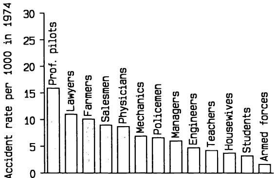
图3.1 条形图显示1974年按职业划分的通用航空事故率（每千次）（Booze，1977）。
Figure 3.1 Bar diagram showing general aviation accident rates (per 1000) in 1974 by occupation (Booze, 1977).
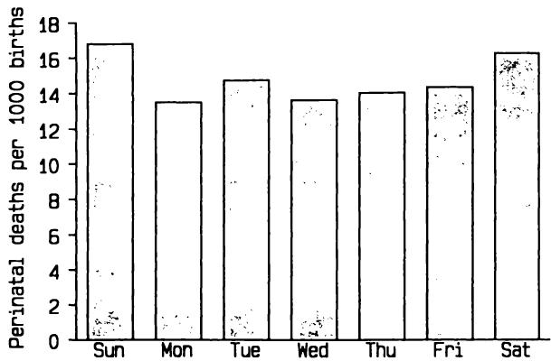
图3.2 1979年英格兰和威尔士按星期几划分的围产期死亡率（Macfarlane和Mugford，1984）。
Figure 3.2 Perinatal mortality in England and Wales in 1979 by day of the week (Macfarlane and Mugford, 1984).
对于连续变量，如年龄和血清胆红素，会有大量的不同观测值，因此需要一种替代方法。本章的其余部分将重点介绍以数值和图形方式描述和总结此类数据的方法。
For continuous variables, such as age and serum bilirubin, there will be a large number of different observed values, so an alternative approach is needed. The remainder of this chapter concentrates on ways of describing and summarizing such data both numerically and graphically.
在本章中，我将首次介绍一些数学符号。
In this chapter I shall introduce some mathematical notation for the first
有关这些符号的进一步解释，请参见本书末尾的附录A。
time. Further explanation of this notation can be found in Appendix A at the end of the book.
3.2 平均数 3.2 AVERAGES
描述一组连续变量的观测值时，显而易见的第一步是计算平均值。在口语中，“平均数”一词没有精确的含义，但在统计学中，有几种所谓的“集中趋势度量”，它们被精确定义，可以被视为平均值或典型值。
The obvious first step when describing a set of observations of a continuous variable is to calculate the average value. In colloquial use the word 'average' does not have a precise meaning, but in statistics there are several so- called 'measures of central tendency' that are precisely defined and which can be taken as the average or typical value.
其中最常见的是算术平均数，通常简称为均值，它是所有观测值之和除以观测值的数量。表3.1显示了25名囊性纤维化患者的年龄和肺功能数据。所示变量是最大静态吸气
The most common of these is the arithmetic mean, usually just called the mean, which is the sum of all the observations divided by the number of observations. Table 3.1 shows age and lung function data for 25 patients with cystic fibrosis. The variable shown is the maximal static inspiratory
表3.1 25名囊性纤维化患者的年龄和PImax (O'Neill 等人，1983)
Table 3.1 Age and PImax in 25 patients with cystic fibrosis (O'Neill et al., 1983)
| Subject | Age (years) | PImax (cm H2O) |
| 1 | 7 | 80 |
| 2 | 7 | 85 |
| 3 | 8 | 110 |
| 4 | 8 | 95 |
| 5 | 8 | 95 |
| 6 | 9 | 100 |
| 7 | 11 | 45 |
| 8 | 12 | 95 |
| 9 | 12 | 130 |
| 10 | 13 | 75 |
| 11 | 13 | 80 |
| 12 | 14 | 70 |
| 13 | 14 | 80 |
| 14 | 15 | 100 |
| 15 | 16 | 120 |
| 16 | 17 | 110 |
| 17 | 17 | 125 |
| 18 | 17 | 75 |
| 19 | 17 | 100 |
| 20 | 19 | 40 |
| 21 | 19 | 75 |
| 22 | 20 | 110 |
| 23 | 23 | 150 |
| 24 | 23 | 75 |
| 25 | 23 | 95 |
压力 (PImax)，并且是呼吸肌力量的一个指标。PImax值的总和是2315，所以均值是 。均值是通常所说的“平均数”时所指的值。均值有时用 表示（读作“x bar”），但除了在公式中，最好避免使用这种速记符号。
pressure (PImax) and is an index of respiratory muscle strength. The sum of the PImax values is 2315, so the mean is . The mean is the value usually meant when talking about 'the average'. The mean is sometimes indicated by (pronounced 'x bar'), but this shorthand notation is best avoided other than in equations.
另一个常用的度量是中位数。当数据按顺序排列时，它是位于中间的值。对于表3.1中的PImax数据，有25个观测值，因此中位数是按顺序排列的第13个值。如果我们将PImax值按升序排列，我们得到
The other frequently used measure is the median. This is the value that comes half- way when the data are ranked in order. For the PImax data in Table 3.1 there are 25 observations, so the median is the 13th value in order. If we rank the PImax values in ascending order we get
| Rank | 1 | 2 | 3 | 4 | 5 | 6 | 7 | 8 | 9 | 10 | 11 | 12 | 13 |
| PImax | 40 | 45 | 70 | 75 | 75 | 75 | 75 | 80 | 80 | 80 | 85 | 95 | 95 |
| Rank | 14 | 15 | 16 | 17 | 18 | 19 | 20 | 21 | 22 | 23 | 24 | 25 | |
| PImax | 95 | 95 | 100 | 100 | 100 | 110 | 110 | 110 | 120 | 125 | 130 | 150 |
| Rank | 1 | 2 | 3 | 4 | 5 | 6 | 7 | 8 | 9 | 10 | 11 | 12 | 13 |
| PImax | 40 | 45 | 70 | 75 | 75 | 75 | 75 | 80 | 80 | 80 | 85 | 95 | 95 |
| Rank | 14 | 15 | 16 | 17 | 18 | 19 | 20 | 21 | 22 | 23 | 24 | 25 | |
| PImax | 95 | 95 | 100 | 100 | 100 | 110 | 110 | 110 | 120 | 125 | 130 | 150 |
我们可以看到中位数是 。更简单地，我们可以立即从表3.1中看出，这些患者的中位年龄是14岁。当观察值数量为偶数时，中位数定义为两个中心值的平均值：如果我们有24个观察值，中位数将是按顺序排列的观察值中第12个和第13个值的平均值。通常中位数上下两侧的观察值数量相等。然而，当有多个观察值等于中位数时，如PImax数据所示，这可能不完全准确。
and we can see that the median is . More easily, we can see immediately from Table 3.1 that the median age of these patients was 14 years. When there is an even number of observations the median is defined as the average of the two central values: if we had 24 observations the median would be the average of the 12th and 13th values in an ordered listing of the observations. There are usually equal numbers of observations above and below the median. However, when there is more than one observation equal to the median, as for the PImax data, this may not be exactly true.
当中出现一些极端数据值被截尾时，中位数尤其有用。如果观察值在某个水平之上或低于检测水平时未精确记录，我们无法计算均值，但如果超过半数受试者有确切值，我们就可以计算中位数。中位数在生存时间分析中也很有价值，这将在第13章中讨论。
The median is especially useful when some extreme data values are censored. If observations are not recorded precisely when they are above a certain level or below a level of detection, we cannot calculate the mean, but we can calculate the median if we have definite values for over half the subjects. The median is also valuable in the analysis of survival times, which is considered in Chapter 13.
均值和中位数都被广泛用于描述一组数据的平均值或典型值。均值的使用频率更高，因为它与最常见的统计分析类型紧密相关，但中位数作为描述性统计量绝不逊色，在某些情况下它比均值更有用，我们将在后面看到。在某些情况下，我们还会计算另一种称为几何均值的度量，它通常接近中位数。其用法在3.4.4节中描述。
The mean and the median are both widely used to describe the average or typical value of a set of data. The mean is much more frequently used because this ties in well with the most common types of statistical analysis, but the median is in no way inferior as a descriptive statistic and in some circumstances it is much more useful than the mean, as we shall see later. In some situations we calculate another measure known as the geometric mean, which is usually close to the median. Its use is described in section 3.4.4.
一组数据中心值的最后一个指标是众数，它就是观察到的最常见的值。对于连续数据，众数很少有实际用途。
A final indicator of the centre of a set of data is the mode which is simply the most common value observed. The mode is rarely of any practical use for continuous data.
3.3 描述变异性 3.3 DESCRIBING VARIABILITY
描述一组连续
The second aspect of describing a set of observations of a continuous
变量观察值的第二个方面是以某种方式评估观察值的变异性。任何一组数据都将包含许多不同的值，例如上面显示的PImax数据。我们感兴趣的是这些值的分布方式—它们是都相似还是差异很大？有几种方法可以解决这个问题。我将首先研究图形方法，然后考虑数值方法。
variable is to assess the variability of the observations in some way. Any set of data will contain many different values, for example the PImax data shown above. We are interested in the way these values are distributed - - are they all similar or do they vary a lot？ There are several ways of tackling this problem. I shall look first at graphical methods, and then consider numerical methods.
3.3.1 直方图 3.3.1 Histogram
描绘一组完整观察值的简单图形方法是使用直方图，其中观察值的数量（或频率）针对不同的值或值组进行绘制。表3.2显示了298名6个月至6岁健康儿童免疫球蛋白IgM的频率分布，图3.3显示了
A simple graphical way of depicting a complete set of observations is by means of the histogram in which the number (or frequency) of observations is plotted for different values or groups of values. Table 3.2 shows the frequency distribution of the immunoglobulin IgM in 298 healthy children aged 6 months to 6 years, and Figure 3.3 shows a histogram of
表3.2 298名6个月至6岁儿童血清IgM浓度（Isaacs 等人，1983）
Table 3.2 Concentrations of serum IgM in 298 children aged 6 months to 6 years (Isaacs et al., 1983)
IgM
| Number of Children | ||||||||||||||||||||||||||||||||||||||||||||||||||
| 0.1 | 3 | ||||||||||||||||||||||||||||||||||||||||||||||||||
| 0.2 | 7 | ||||||||||||||||||||||||||||||||||||||||||||||||||
| 0.3 | 19 | ||||||||||||||||||||||||||||||||||||||||||||||||||
| 0.4 | 27 | ||||||||||||||||||||||||||||||||||||||||||||||||||
| 0.5 | 32 | ||||||||||||||||||||||||||||||||||||||||||||||||||
| 0.6 | 35 | ||||||||||||||||||||||||||||||||||||||||||||||||||
| 0.7 | 38 | ||||||||||||||||||||||||||||||||||||||||||||||||||
| 0.8 | 38 | ||||||||||||||||||||||||||||||||||||||||||||||||||
| 0.9 | 22 | ||||||||||||||||||||||||||||||||||||||||||||||||||
| 1.0 | 16 | ||||||||||||||||||||||||||||||||||||||||||||||||||
| 1.1 | 16 | ||||||||||||||||||||||||||||||||||||||||||||||||||
| 1.2 | 6 | ||||||||||||||||||||||||||||||||||||||||||||||||||
| 1.3 | 7 | ||||||||||||||||||||||||||||||||||||||||||||||||||
| 1.4 | 9 | ||||||||||||||||||||||||||||||||||||||||||||||||||
| 1.5 | 6 | ||||||||||||||||||||||||||||||||||||||||||||||||||
| 1.6 | 2 | ||||||||||||||||||||||||||||||||||||||||||||||||||
| 1.7 | 3 | ||||||||||||||||||||||||||||||||||||||||||||||||||
| 1.8 | 3 | ||||||||||||||||||||||||||||||||||||||||||||||||||
| 2.0 | 3 | ||||||||||||||||||||||||||||||||||||||||||||||||||
| 2.1 | 2 | ||||||||||||||||||||||||||||||||||||||||||||||||||
| 2.2 | 1 | ||||||||||||||||||||||||||||||||||||||||||||||||||
| 2.5 | 1 | ||||||||||||||||||||||||||||||||||||||||||||||||||
| 2.7 | 1 | ||||||||||||||||||||||||||||||||||||||||||||||||||
| 4.5 | 1 |
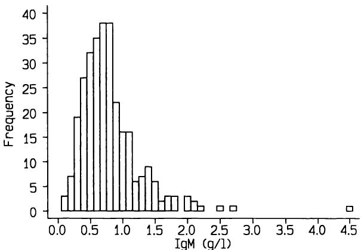
图3.3 298名6个月至6岁儿童IgM浓度频率直方图（Isaacs等，1983）。
Figure 3.3 Frequency histogram of IgM concentrations in 298 children aged 6 months to 6 years (Isaacs et al., 1983).
这些值。如果存在许多不同的值，为了获得更好的视觉印象，在构建直方图之前通常需要对观测值进行分组。除非样本量非常大，否则大约8到15个组通常足以进行令人满意的展示。这将取决于实际数据，因为保持分组简单是可取的。尽管我们可以将IgM数据以例如0.25的间隔进行分组，但这超出了数据的精度。更好的方法是图3.4所示的0.2间隔分组。请注意，每个垂直条的宽度覆盖了已分组的值范围。因此，例如，当我们分组0.1和0.2时，我们实际上包括了0.05到0.25之间的值，即使数据记录时没有那么精确。直方图类似于条形图，但由于频率与连续变量相关，直方图中相邻的条形应相互接触。
these values. If there are many different values it is often desirable to group observations before constructing a histogram in order to get a better visual impression. Unless the sample is very large somewhere around 8 to 15 groups will usually suffice for a satisfactory display. This will depend upon the actual data, for it is desirable to keep the groupings simple. Although we could group the IgM data in intervals of, say, 0.25, this goes beyond the precision of the data. Better is the grouping in intervals of 0.2 shown in Figure 3.4. Note that the width of each vertical bar covers the range of values that have been grouped. So, for example, when we group 0.1 and 0.2 we are actually including values between 0.05 and 0.25 even though the data were not recorded that accurately. A histogram is similar to a bar diagram, but because the frequencies relate to a continuous variable adjacent bars of a histogram should touch.
直方图中的条形通常宽度都相同，因为分组大小相同。如果分组大小不同，则应通过记住每个条形的面积与频率成比例而非其高度来加以考虑。这一原则通过显示1985年伦敦哈罗行政区道路交通事故伤亡人员年龄分布的数据进行说明。表3.3显示了所呈现的数据。大多数伤亡人员是成年人，其中25至59岁年龄段的人数最多。显然，分组的宽度差异很大，实际上从1年到35年不等，在直方图中必须考虑到这一点。请注意，为了将年龄组纳入直方图，我们必须假设一个合理的年龄上限—这里将取为80岁。
The bars in histograms are usually all the same width, because the groupings are the same size. If the groups are not the same size this should be allowed for by remembering that it is the area of each bar that is proportional to the frequency, not its height. This principle is illustrated on data showing the age distribution of road accident casualties in the London borough of Harrow in 1985. Table 3.3 shows the data as presented. Most of the casualties were adults, with the greatest number in the age range 25 to 59. Clearly the widths of the groupings vary considerably, from 1 to 35 years in fact, and this must be taken account of in a histogram of the data. Note that in order to include the age group in a histogram we have to assume a reasonable upper age limit - here it will be taken as 80.
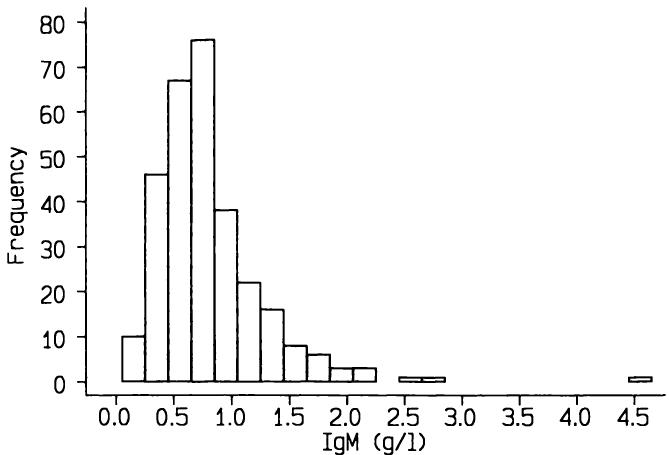
图3.4 与图3.3相同，但数据以的间隔分组。
Figure 3.4 As Figure 3.3 but data grouped in intervals of .
表3.3 1985年伦敦哈罗行政区道路交通事故伤亡人员（不包括65名年龄未知者）
Table 3.3 Road accident casualties in the London Borough of Harrow in 1985 (excluding 65 with unknown age)
| 年龄 | 频率 |
| 0- 4 | 28 |
| 5- 9 | 46 |
| 10-15 | 58 |
| 16 | 20 |
| 17 | 31 |
| 18-19 | 64 |
| 20-24 | 149 |
| 25-59 | 316 |
| 60+ | 103 |
| 总计 | 815 |
| Age | Frequency |
| 0- 4 | 28 |
| 5- 9 | 46 |
| 10-15 | 58 |
| 16 | 20 |
| 17 | 31 |
| 18-19 | 64 |
| 20-24 | 149 |
| 25-59 | 316 |
| 60+ | 103 |
| Total | 815 |
首先，考虑如果我们忽略上述警告，绘制一个直方图会发生什么：对于每个年龄组，高度表示表3.3中显示的频率，宽度表示年龄范围—这显示在图3.5中。这个直方图表明事故受害者是16岁和17岁青少年的可能性远低于成年人，而我们可能预期情况恰恰相反。通过使频率对应每个条形的面积而非其高度，我们得到了正确的图示，如图3.6所示。我们所做的是考虑每年龄段的伤亡人数—当我们没有明确的这个数据时，我们取
First, consider what happens if we ignore the above warning and draw a histogram where, for each age group, the height indicates the frequency shown in Table 3.3 and the width shows the age range - this is shown in Figure 3.5. This histogram suggests that accident victims are much less likely to be 16 and 17 year olds than adults, whereas we would probably expect the opposite to be true. We get the correct picture by making the frequencies correspond to the area of each bar rather than its height, as is shown in Figure 3.6. What we have done is consider the number of casualties per year of age - where we don't have this explicitly we take the
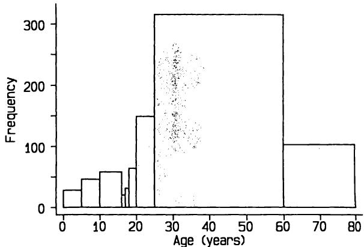
图3.5 表3.3道路交通事故数据的不正确直方图。
Figure 3.5 Incorrect histogram of road accident data of Table 3.3.
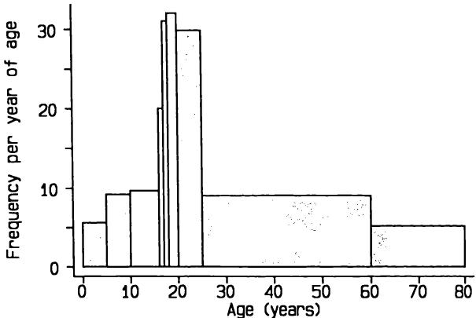
图 3.6 道路交通事故数据的正确直方图。
Figure 3.6 Correct histogram of road accident data.
该年龄组的平均值。图 3.6 展示了数据的真实情况，从中我们可以看出，道路交通事故伤亡人员最有可能的年龄段是 16 至 24 岁，而非其他任何年龄组。
average value in that age group. Figure 3.6 shows a true impression of the data, from which we can see that road accident casualties are more likely to be aged 16 to 24 than any other age group.
请注意，此直方图仅显示观察到的伤亡人数。它并未表明不同年龄人群发生道路交通事故的风险—为此，我们还需要了解人口的年龄分布，并且需要假设所有伤亡人员都居住在哈罗（Harrow），且没有哈罗居民在其他地方发生事故。
Note that this histogram just shows the observed numbers of casualties. It does not indicate the risk of a road accident for people of varying age - for this we would also need to know the age distribution of the population. and would need to assume that all casualties lived in Harrow and that no Harrow residents had accidents elsewhere.
有时，显示每个区间内样本的比例会更有用。所有频率都通过除以样本量并乘以 100 转换为百分比。图 3.7(a) 显示了 IgM 数据的相对频率直方图，它与图 3.3 的区别仅在于纵轴的标注方式。另一种绘制数据的方法是连接直方图所有垂直条顶部的中点；这被称为频率多边形。图 3.7(b) 显示了相同数据的此类图表。
It is sometimes more useful to show the proportion of the sample in each interval. All the frequencies are converted into percentages by dividing by the sample size and multiplying by 100. Figure 3.7(a) shows the resulting relative frequency histogram for the IgM data, which differs from Figure 3.3 only in the way the vertical axis is labelled. An alternative way of plotting the data is to join the mid- points of the tops of all the vertical bars of the histogram; this is called a frequency polygon. Figure 3.7(b) shows such a plot for the same data.
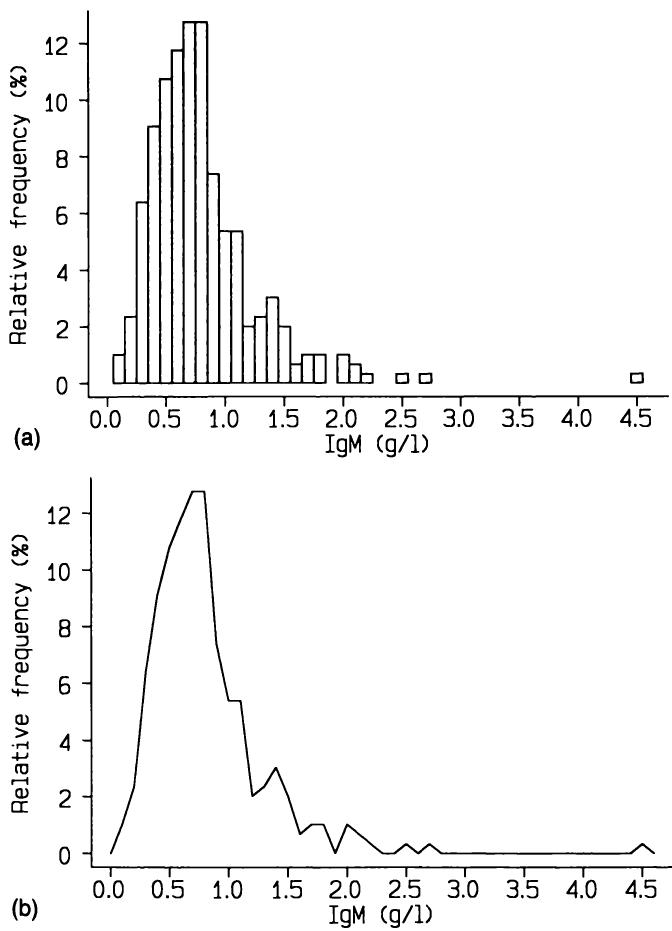
图 3.7 图 3.3 中的 IgM 数据显示为 (a) 相对频率直方图，(b) 相对频率多边形。
Figure 3.7 IgM data in Figure 3.3 shown as (a) Relative frequency histogram, (b) Relative frequency polygon.
直方图的纵轴必须从零开始，并且刻度上不应有任何断裂。否则，视觉印象将具有误导性。同样，不应使用三维效果。
The vertical axis of a histogram must start at zero, and there should not be any breaks in the scale. Otherwise the visual impression will be misleading. Likewise three- dimensional effects should not be used.
3.3.2 茎叶图 3.3.2 Stem-and-leaf diagram
直方图的一种巧妙修改，称为茎叶图，也允许显示所有实际观测值。图 3.8 显示了表 3.1 中的 PImax 数据，重新绘制为茎叶图。原始数据可以通过将左侧的数字（茎）与同一行右侧的每个数字（叶）连接起来进行重构。这是一种非常经济地再现原始数据的方法，并且比简单的数据列表更有用。
A clever modification of the histogram called a stem- and- leaf diagram allows all the actual observations to be shown too. Figure 3.8 shows the PImax data from Table 3.1 redrawn as a stem- and- leaf diagram. The raw data can be reconstructed by joining the numbers on the left (the stems) to each of the numbers on the right (the leaves) on the same row. This is a very economical way of reproducing the raw data, and is more useful than a simple list of the data.
4 05 5 6 7 05555 8 0005 9 5555 10 000 11 000 12 05 13 0 14 15 0
茎叶图在许多情况下都适用，尤其是在有许多不同值的情况下，但最佳格式取决于数据的性质和样本量。表 3.2 中的 IgM 数据无法使用五个“茎”（0, 1, 2, 3, 4）成功制作成茎叶图，但我们可以拆分每个组以获得一个有用的图表，如 图 3.9 所示。
The stem- and- leaf diagram works well in many circumstances, especially where there are many different values, but the best format depends on the nature of the data and the sample size. The IgM data in Table 3.2 cannot be made into a successful stem- and- leaf diagram using five 'stems' (0, 1, 2, 3, 4), but we can split each group to get a useful diagram, as in Figure 3.9.
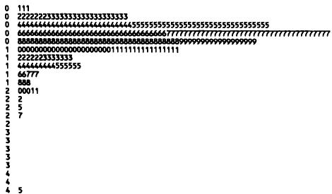
3.3.3 累积频率 3.3.3 Cumulative frequencies
3.3.3 累积频率我们之前看到，样本观测值的分布可以表示为样本中每个小范围内值的百分比。这在图3.7的相对频率直方图中有所展示。我们可以将这个想法进一步推演，考虑每个组中该组或更低组的受试者比例。因此，我们计算每个水平的累积频率—即小于或等于每个值的观测值比例。计算结果如表3.4所示。累积相对频率可以绘制成直方图，如图3.10(a)所示。然而，对于累积频率，没有必要像这样对数据进行分组，因为我们可以直接绘制累积频率，如图3.10(b)所示。这种图可以用来查看百分之多少的
3.3.3 Cumulative frequenciesWe saw earlier how the distribution of a sample of observations can be shown as the percentage of the sample with values in each of several small ranges. This was shown in the relative frequency histogram in Figure 3.7. We can take this idea a stage further by considering for each group the proportion of subjects in that group or a lower one. Thus we calculate the cumulative frequency at each level - the proportion of observations less than or equal to each value. The calculations are shown in Table 3.4. The cumulative relative frequencies can be plotted in a histogram, as in Figure 3.10(a). However, for cumulative frequencies there is no need to group the data like this because we can plot the cumulative frequencies directly, as in Figure 3.10(b). This plot can be used either to see what percentage of
表3.4 298个IgM值的累积频率分布
Table 3.4 Cumulative frequency distribution of 298 IgM values
| IgM g/l | 频数 | 相对频率 % | 累积频数 | 累积相对频率 % |
| 0.1 | 3 | 1.0 | 3 | 1.0 |
| 0.2 | 7 | 2.3 | 10 | 3.4 |
| 0.3 | 19 | 6.4 | 29 | 9.7 |
| 0.4 | 27 | 9.1 | 56 | 18.8 |
| 0.5 | 32 | 10.7 | 88 | 29.5 |
| 0.6 | 35 | 11.7 | 123 | 41.3 |
| 0.7 | 38 | 12.8 | 161 | 54.0 |
| 0.8 | 38 | 12.8 | 199 | 66.8 |
| 0.9 | 22 | 7.4 | 221 | 74.2 |
| 1.0 | 16 | 5.4 | 237 | 79.5 |
| 1.1 | 16 | 5.4 | 253 | 84.9 |
| 1.2 | 6 | 2.0 | 259 | 86.9 |
| 1.3 | 7 | 2.3 | 266 | 89.3 |
| 1.4 | 9 | 3.0 | 275 | 92.3 |
| 1.5 | 6 | 2.0 | 281 | 94.3 |
| 1.6 | 2 | 0.7 | 283 | 95.0 |
| 1.7 | 3 | 1.0 | 286 | 96.0 |
| 1.8 | 3 | 1.0 | 289 | 97.0 |
| 2.0 | 3 | 1.0 | 292 | 98.0 |
| 2.1 | 2 | 0.7 | 294 | 98.7 |
| 2.2 | 1 | 0.3 | 295 | 99.0 |
| 2.5 | 1 | 0.3 | 296 | 99.3 |
| 2.7 | 1 | 0.3 | 297 | 99.7 |
| 4.5 | 1 | 0.3 | 298 | 100.0 |
| 总计 | 298 | 99.9 |
| IgM g/l | Frequency | Relative Frequency % | Cumulative Frequency | Cumulative Relative Frequency % |
| 0.1 | 3 | 1.0 | 3 | 1.0 |
| 0.2 | 7 | 2.3 | 10 | 3.4 |
| 0.3 | 19 | 6.4 | 29 | 9.7 |
| 0.4 | 27 | 9.1 | 56 | 18.8 |
| 0.5 | 32 | 10.7 | 88 | 29.5 |
| 0.6 | 35 | 11.7 | 123 | 41.3 |
| 0.7 | 38 | 12.8 | 161 | 54.0 |
| 0.8 | 38 | 12.8 | 199 | 66.8 |
| 0.9 | 22 | 7.4 | 221 | 74.2 |
| 1.0 | 16 | 5.4 | 237 | 79.5 |
| 1.1 | 16 | 5.4 | 253 | 84.9 |
| 1.2 | 6 | 2.0 | 259 | 86.9 |
| 1.3 | 7 | 2.3 | 266 | 89.3 |
| 1.4 | 9 | 3.0 | 275 | 92.3 |
| 1.5 | 6 | 2.0 | 281 | 94.3 |
| 1.6 | 2 | 0.7 | 283 | 95.0 |
| 1.7 | 3 | 1.0 | 286 | 96.0 |
| 1.8 | 3 | 1.0 | 289 | 97.0 |
| 2.0 | 3 | 1.0 | 292 | 98.0 |
| 2.1 | 2 | 0.7 | 294 | 98.7 |
| 2.2 | 1 | 0.3 | 295 | 99.0 |
| 2.5 | 1 | 0.3 | 296 | 99.3 |
| 2.7 | 1 | 0.3 | 297 | 99.7 |
| 4.5 | 1 | 0.3 | 298 | 100.0 |
| Total | 298 | 99.9 |
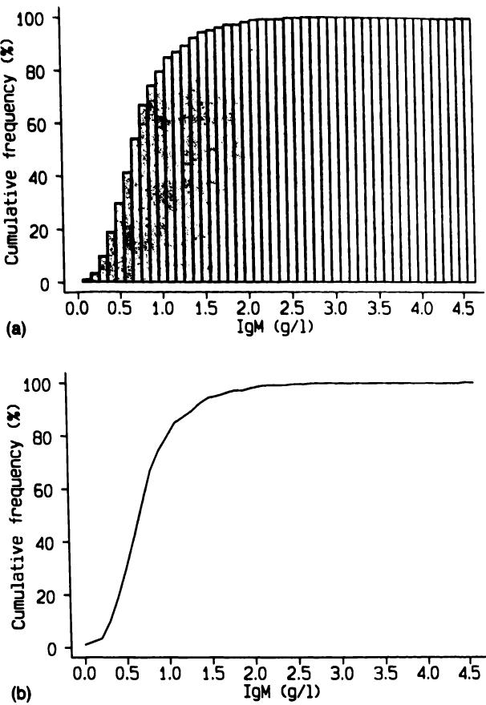
图3.10 IgM数据展示为 (a) 累积相对频率直方图, (b) 累积分布。
Figure 3.10 IgM data shown as (a) Cumulative relative frequency histogram, (b) Cumulative distribution.
观测值高于或低于任何选定水平的百分比，或者找出给定百分比的儿童IgM值高于或低于的数值。例如，我们可以很容易地看到中位IgM浓度为 。如果数值已被分组，则无法从直方图或累积直方图中获取此信息。
observations lie above or below any chosen level, or to find the values which a given percentage of children's IgM values lie above or below. For example, we can easily see that the median IgM concentration was . This information cannot be obtained from a histogram or cumulative histogram if values have been grouped.
累积频率对于比较两个或多个不同个体组中值的分布特别有用。图3.11(a)显示了1568名吸烟者子女和1576名非吸烟者子女首次出牙年龄的相对频率直方图。图3.11(b)显示了相同数据的累积直方图。图3.11(c)显示了相同数据的累积频率多边形。因为我们考虑的是累积频率，所以我们连接的是垂直条形的右端点，而不是像图3.7(b)中那样连接中点。该图显示，组间差异不如图3.11(b)中所示的那么大—在之前的图中，两组并排显示，这可能导致误导性的视觉印象。从图3.11(c)中我们可以很容易地看出，吸烟者子女首次出牙的中位年龄大约早了一周。
Cumulative frequencies are especially useful for comparing the distribution of values in two or more different groups of individuals. Figure 3.11(a) shows relative frequency histograms for the age at first tooth eruption of 1568 children of smokers and 1576 non- smokers. Figure 3.11(b) shows cumulative histograms of the same data. Figure 3.11(c) shows cumulative frequency polygons of the same data. Because we are considering cumulative frequencies we join the right- hand points of the vertical bars rather than the mid- points as in Figure 3.7(b). This plot shows that the difference between the groups is not as great as was suggested in Figure 3.11(b) – the two groups were side by side in the previous plot, which can lead to a misleading visual impression. We can easily see from Figure 3.11(c) that the median age at first tooth eruption was about one week earlier in the children of smokers.
3.4 量化变异性 3.4 QUANTIFYING VARIABILITY
图形方法对于检查数据的变异性很重要，但也有必要有一种数值方法来概括变异量。与均值结合使用，这将提供一组观测值的有益但简明的总结。量化一组数据变异性主要有三种方法。我们可以引用所有值的范围，从累积频率分布中导出的特定值，或者获得观测值围绕均值离散程度的数值度量。
Graphical methods are important for examining the variability of data, but it is necessary also to have a numerical way of summarizing the amount of variability. Used in conjunction with the mean, this would provide an informative but brief summary of a set of observations. There are three main approaches to quantifying the variability of a set of data. We can either quote the range of all the values, specific values derived from the cumulative frequency distribution, or we can obtain a numerical measure of the dispersion of the observations around the mean.
3.4.1 范围 3.4.1 Range
描述一组数据离散程度最简单的方法是引用最低值和最高值。这些值被称为范围。IgM数据的范围是0.1到 。这不是一个令人满意的总结，因为它只考虑了数据两端最极端（也许是最特殊）的值，而中间值的分布方式不会影响范围。因此，对于IgM数据，我们不知道4.5远高于第二高值 。主要由于这个原因，范围不被广泛使用。
The simplest way to describe the spread of a set of data is to quote the lowest and highest values. These values are known as the range. The range of the IgM data was 0.1 to . This is not a satisfactory summary, because it takes account of only the most extreme (and perhaps most peculiar) values at each end of the data, and the way the intermediate values are distributed will not influence the range. Thus for the IgM data we have no idea that 4.5 was considerably more than the second highest value of . Mainly for this reason the range is not widely used.
3.4.2 百分位数 3.4.2 Centiles
通过指定包含大部分而非全部数据值的两个值，我们可以解决大部分困难。例如，我们可以计算出90%的观测值所处的范围。低于给定百分比值的值称为百分位数，它对应于具有指定累积相对频率的值。
By specifying two values that encompass most rather than all of the data values we get round much of the difficulty. For example, we could calculate the values between which of the observations lie. The value below which a given percentage of the values occur is called a centile or percentile, and corresponds to a value with a specified cumulative relative frequency.
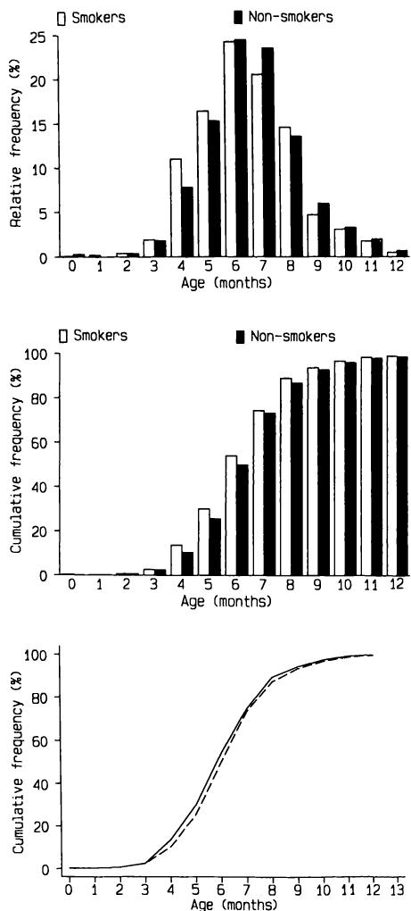
我们需要IgM值分布的第5和第95百分位数。从表3.4的最后一列可以看出，累积相对频率在IgM值为的组中某个位置超过5%，并在处达到95%。
We require the 5th and 95th centiles of the distribution of IgM values. From the last column of Table 3.4 we can see that the cumulative relative frequency passes somewhere in the group of IgM values of , and is reached at the value of .
更正确的通用方法是计算所需观测值的秩，我们通过将样本量加一的必要百分比来计算。这里我们需要秩为和的值。这种计算通常会导致非整数值，因此我们可能需要进行插值。例如，我们想要IgM值在秩次序中第14和第15个观测值之间0.95处的值。根据表3.4，这两个值都等于，因此第5百分位数是，同样地，第95百分位数是。然而，如果我们想要第10百分位数，我们需要对应于秩为的IgM值。秩为29和30的观测值分别是0.3和，我们通过计算来取这两个值之间十分之九处的值。因此，0.3和1.7是这个儿童样本中IgM观测分布的第5和第95百分位数，这两个值因此指定了我们可以称之为90%中心范围—即中心90%的值所处的范围（即排除分布两端各5%的值）。
A more correct general approach is to calculate the ranks of the required observations, which we do by taking the necessary percentages of the sample size plus one. Here we need the values with ranks and . This calculation usually leads to non- integer values, so we may need to interpolate. For example we want the value of IgM 0.95 of the way between the 14th and 15th observations in rank order. As these are, from Table 3.4, both equal to the 5th centile is , and likewise the 95th centile is . However, if we want the 10th centile, we would need the IgM value corresponding to a rank of . The observations with ranks 29 and 30 are 0.3 and and we take the value nine- tenths of the way between these values, by calculating . The values 0.3 and 1.7 are thus the 5th and 95th centiles of the observed distribution of IgM in this sample of children and these two values thus specify what we can call a central range—the range within which the central of values lie (i.e. excluding at each end of the distribution).
除了第5和第95百分位数，还可以引用其他百分位数。最常见的替代方案是引用95%中心范围（和百分位数），但有时也使用80%中心范围（第10和第90百分位数）。第50百分位数是中位数的另一个名称，因为一半的观测值小于（且大于）此值。第25和第75百分位数被称为四分位数；这些值与中位数一起将数据分为四个等人口的子组。第25和第75百分位数之间的数值差是四分位距，偶尔用于描述变异性。
Other centiles can be quoted rather than the 5th and 95th. The most common alternative is to quote a central range ( th and th centiles), but an central range (10th and 90th centiles) is sometimes used. The 50th centile is another name for the median, as half of the observations are less than (and greater than) this value. The 25th and 75th centiles are known as quartiles; these values together with the median divide the data into four equally populated subgroups. The numerical difference between the 25th and 75th centiles is the inter- quartile range, and is occasionally used to describe variability.
一种简单但有用的使用百分位数总结数据的半图形方法是箱线图。图3.12显示了IgM数据的箱线图。箱体表示下四分位数和上四分位数，中心线是中位数。“须”末端的点是和的值，尽管须有时表示极端值。对于单个数据集，直方图信息量更大，但多个数据集可以使用箱线图经济地总结。有时，超出须范围的任何值都会单独绘制。
A simple but useful semi- graphical way of summarizing data using centiles is the box- and- whisker plot. Figure 3.12 shows a box- and- whisker plot for the IgM data. The box indicates the lower and upper quartiles and the central line is the median. The points at the ends of the 'whiskers' are the and values, although the whiskers sometimes indicate the extreme values. For a single set of data a histogram is more informative, but several sets of data can be summarized economically using the box- and- whisker plot. Sometimes any values outside the range of the whiskers are plotted individually.
3.4.3 标准差 3.4.3 Standard deviation
量化变异性的另一种方法是基于对每个值与均值之间距离进行平均的想法。对于一个
The alternative approach to quantifying variability is based on the idea of averaging the distance each value is from the mean. For an individual with
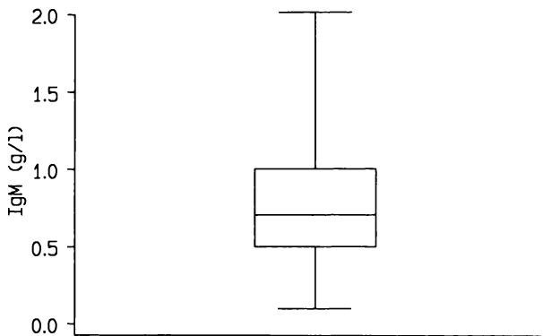
图3.12 IgM数据的箱线图，显示了、25、50、75和的累积相对频率（百分位数）。
Figure 3.12 Box-and-whisker plot of the IgM data, showing the , 25, 50, 75 and cumulative relative frequencies (centiles).
观测值为的个体，与均值的距离是，如果我们有个观测值，我们就有个这样的距离，每个个体一个。对于低于均值的观测值，差值将是负的。我们可以计算观测值与其均值之间的平均距离，但这些距离的总和总是零，因为均值是根据个体观测值计算的。然而，如果我们先将距离平方再求和，我们就会得到一个必须为正的量。这些平方差的平均值因此提供了个体偏离均值的度量。这个量称为方差，定义为
an observed value the distance from the mean is , and if we have observations we have a set of such distances, one for each individual. For observations below the mean the difference will be negative. We can calculate the average distance between the observations and their mean, but the sum of these distances, , is always zero because of the way the mean is calculated from the individual observations. However, if we square the distances before we sum them we get a quantity that must be positive. The average of these squared differences thus gives a measure of individual deviations from the mean. This quantity is called the variance, and is defined as
请注意，我们是用 而不是更显而易见的 来进行除法。除以 得到的是观测值围绕样本均值的方差，但我们几乎总是将数据视为来自某个更大总体的样本，并希望使用样本数据来估计总体的变异性。除以 能更好地估计总体方差，尽管对于大样本而言，这种差异显然可以忽略不计。
Note that we divide by rather than the more obvious . Dividing by gives the variance of the observations around the sample mean, but we virtually always consider our data as a sample from some larger population, and wish to use the sample data to estimate the variability in the population. Dividing by gives us a better estimate of the population variance, although clearly for large samples the difference is negligible.
方差将在后续章节中出现，尤其是在讨论方差分析技术时。就我们目前的目的而言，
The variance will turn up in later chapters, notably when discussing the technique known as analysis of variance. For our present purpose, the
方差不是一个描述变异性的合适度量，因为它与原始数据的单位不同。例如，我们不希望用平方毫米汞柱来表示一组血压测量值的变异性。解决这个问题的显而易见的办法是，将方差的平方根作为我们的度量。我们称这个量为标准差。标准差通常缩写为 sd 或 SD 或 或 （希腊字母 sigma），其定义为
variance is not a suitable measure for describing variability because it is not in the same units as the raw data. We do not, for example, wish to express the variability of a set of blood pressure measurements in square mm Hg. The obvious solution to this problem is to take as our measure the square root of the variance. We call this quantity the standard deviation. The standard deviation is usually abbreviated to sd or SD or or (the Greek letter sigma), and is defined as
标准差这个名称对于这个统计量来说并不好，因为它没有任何“标准”之处。更合理的理解是，它大约是观测值与均值的平均偏差（或距离）。
Standard deviation is not a good name for this statistic as there is nothing 'standard' about it. It may more reasonably be thought of as approximately the average deviation (or distance) of the observations from the mean.
许多计算器可以通过标记为 或 的按键来计算标准差。（这里使用希腊字母 而不是 并不完全正确，这将在下一章中解释。如果计算器上有标记为 和 的按键，则应使用后者。）
Many calculators can calculate the standard deviation, by means of a key marked or . (The use of the Greek here rather than is not strictly correct, as will be explained in the next chapter. If there are keys marked and the latter should be used.)
然而，如果我们希望自己进行计算，有一个更容易使用的公式，它在数学上是等价的：
However, should we wish to do the calculation ourselves there is a much easier formula to use, which is mathematically equivalent:
（请注意 符号的简化，如附录 A 所述。）使用这个公式，我们可以从观测值的总和 和观测值平方的总和 来计算标准差。我们不需要计算每个观测值与均值的单独距离。
(Note the simplification of the notation, as described in Appendix A.) Using this formula we can calculate the standard deviation from the sum of the observations, , and the sum of the squares of the observations, . We do not need to calculate the individual distances from the mean.
例如，对于表3.1中所示的PImax数据，数据的和以及数据平方的和为
For example, for the PImax data shown in Table 3.1 the sum of the data and the sum of the squares of the data are
因此，平均PImax为 ，标准差为
so the mean PImax is and the standard deviation is
请注意，目前我将平均值和标准差保留一位额外的小数位，因为我将进行进一步的计算。在报告这些结果时，一位小数位就足够了。
Note that I shall keep an extra decimal place at present for the mean and standard deviation because I shall be doing some further calculations. One decimal place would be sufficient when reporting these results.
标准差在数据分析中具有重要作用，但在这里我们关注其作为描述性统计量的值。实际上，尽管标准差广泛用于此目的，但它仅间接地用于描述一组数据的变异性。例如，我们可以说，在许多情况下，一组观察值中的绝大多数（约 ）将落在平均值两个标准差之内。这种说法的适用性取决于数据分布的形状。如果分布是合理对称的，那么上述说法通常是正确的。
The standard deviation has an important role in data analysis, but here we are concerned with its value as a descriptive statistic. In fact, although the standard deviation is widely used for this purpose it is useful only indirectly for describing the variability of a set of data. We can say, for example, that in many circumstances the large majority (about ) of a set of observations will be within two standard deviations of the mean. The appropriateness of this statement depends on the shape of the distribution of the data. If the distribution is reasonably symmetric then the above statement will usually be true.
对于图3.8中的PImax数据，平均值为92.60，标准差为 。平均值两侧两个标准差的值分别为 和 。（我们通常使用“平均值 ”来表示这两个值，即平均值“加或减”两倍标准差。）25个观察值中，除了两个之外，其余所有值都在此范围内；我们预期平均而言，大约有一个观察值落在平均值 范围之外（即约 的25个观察值）。
For the PImax data in Figure 3.8 the mean was 92.60 and the standard deviation was . The values that are two standard deviations either side of the mean are and . (We often use the expression 'mean ' to mean both of these values, i.e. the mean 'plus or minus' twice the standard deviation.) All but two of the 25 observations were within this range; we would expect to find on average one observation outside the range mean (i.e. about of 25).
3.4.4 偏态分布 3.4.4 Skewed distributions
对于不具有对称分布的数据，在使用刚才描述的方式使用标准差时需要小心。例如，图3.3中的IgM数据明显具有非对称分布—有一个长长的右侧“尾巴”。这被称为偏态分布。IgM数据的平均值和标准差分别为0.80和 。计算平均值 得到的值是 和 1.74。较低的值是负数，这不可能是IgM的有效值。1.74的上限值被12个观察值超出，占总数的 。这两个值显然不能很好地描述大部分数据的范围。尽管它们仍然包括大约 的观察值，但排除的观察值都集中在一个尾部。
For data which do not have a symmetric distribution we need to be careful when using the standard deviation in the way just described. For example, the IgM data in Figure 3.3 clearly have an asymmetric distribution- - there is a long right- hand 'tail'. This is called a skewed distribution. The mean and standard deviation of the IgM data are 0.80 and respectively. Calculating the mean gives the values and 1.74. The lower value is negative, which is not a possible value of IgM. The upper value of 1.74 is exceeded by 12 of the observations, of the total. The two values clearly do not describe the range of the bulk of the data very well. Although they still include about of the observations, the exclusions are all in one tail.
对于不能为负值的测量数据（通常如此），如果标准差大于平均值的一半，我们可以推断数据具有偏态分布。然而，不能保证反之亦然，但直方图可以迅速揭示数据是否偏斜。像IgM数据那样的偏斜被称为正偏态，并且很常见。相反的现象，即左侧尾部延长，被称为负偏态，并且很少见。
For measurements that cannot be negative, which is usually the case, we can infer that the data have a skewed distribution if the standard deviation is more than half the mean. There is no guarantee that the converse is true, however, but a histogram will quickly reveal whether the data are skewed or not. Skewness like that of the IgM data is called positive skewness and is common. The opposite phenomenon, with an extended left hand tail, is called negative skewness and is rare.
一般来说，当数据呈偏态分布时，我们采用其他方式来描述数据。主要有两种可能性。第一种是对数据进行数学变换，使变换后的数据分布更接近对称。最常用的方法是对数据取对数（logs）。这种方法的原理将在
In general, when we have data with a skewed distribution we use other ways of describing the data. There are two main possibilities. The first is to transform the data mathematically so that the transformed data have a more nearly symmetric distribution. The most frequent device is to take logarithms (logs) of the data. The rationale for this approach will be
第7章中讨论。然而，从图3.13（显示了 值的直方图）中我们可以看出它在这里效果很好。对数数据的均值和标准差分别为 和 ，因此均值 的值为 和 。这些值已在图3.13中标示。它们在分布的下尾截去了10个值，在上尾截去了6个值，因此给出的值范围包含了 即 的观测值。截断值可以“反变换”回原始尺度，得到 和 ，参考表3.2可知有16个值超出这些限制。如果我们将对数数据的均值反变换（或“反对数”），我们得到一个称为几何均值的量。因此，IgM数据的几何均值为 。当对数变换成功消除偏态时，几何均值将与中位数相似，并且小于原始数据的均值。对数数据的标准差不能有意义地反变换。
discussed in Chapter 7. We can see that it works well here, however, from Figure 3.13 which shows a histogram of values. The mean and SD of the log data are and respectively, so that the values mean are and . These values are indicated in Figure 3.13. They cut off 10 values in the lower tail of the distribution and 6 in the upper tail, and thus give a range of values encompassing or of the observations. The cut- off values can be 'back- transformed' to the original scale giving and , and reference to Table 3.2 shows the 16 values outside these limits. If we back- transform (or 'antilog') the mean of the log data we get a quantity known as the geometric mean. The geometric mean of the data is thus . Where log transformation successfully removes skewness the geometric mean will be similar to the median, and will be less than the mean of the raw data. The standard deviation of the log data cannot be meaningfully back- transformed.
请注意，对数数据可以是负数，并且使用以e为底的对数还是以10为底的对数并不重要。在本例中，使用了以10为底的对数，并使用函数 进行反变换。对数变换仅对消除正偏态有用。
Note that log data can be negative, and that it does not matter whether logs to base e or base 10 are used. In this example, logs to base 10 were used, with the function used for the back- transformation. Log transformation is only useful for removing positive skewness.
描述偏态数据分布的另一种方法是计算对应于所选中心范围的百分位数。例如，要获得包含 观测值的值，我们需要计算第 和第 百分位数。使用
The alternative approach to describing the distribution of skewed data is to calculate the centiles corresponding to a chosen central range. For example, to get the values that enclose of the observations we need to calculate the th and th centiles. Using the method described in the
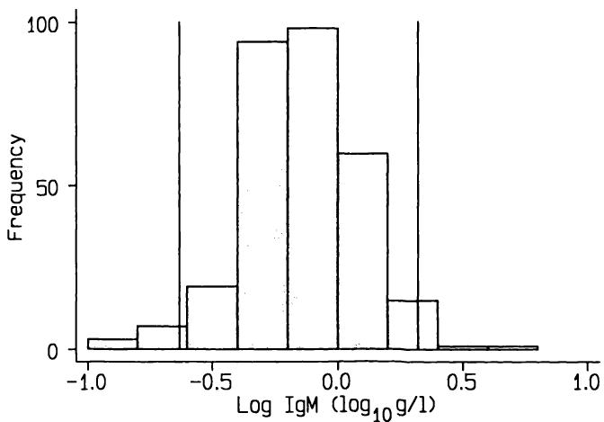
图3.13 的频率直方图，显示均值 的值。
Figure 3.13 Frequency histogram of showing the values of mean .
上一节中描述的方法，这些值通过插值得到0.2和 。这些0.2和 的值被称为经验百分位数，与早期的0.23和2.08（从对数数据的均值 获得）的估计百分位数相对。这两种方法对于这些数据吻合良好。同样，IgM中位数为 ，非常接近几何均值。
previous section, these values are obtained by interpolation as 0.2 and . These values of 0.2 and are called empirical centiles as opposed to the earlier values of 0.23 and 2.08 (obtained from the mean of the log data), which are estimated centiles. The two methods agree well for these data. Likewise the median IgM value is , which is very close to the geometric mean.
3.4.5 评论 3.4.5 Comment
标准差是统计分析中的关键量之一。其描述变异性的价值取决于数据的分布。尽管计算标准差总是有效的，但我们只有在知道（或假设）数据分布合理对称的情况下，才能推断大约 的观测值落在均值 区间内。事实上，正如IgM数据所示，即使分布偏斜，均值 的范围也可能包含大约 的观测值。然而，虽然我们可以合理地仅使用均值和标准差来概括此类数据，但偏态将被隐藏。对于偏态数据，最好使用中位数和 或 的中心范围来概括一组观测值。然而，对于小样本而言，引用百分位数不切实际，因此可以给出范围。否则，可以使用标准差。它的优点是直接使用每个观测值，并且对于大量数据而言，计算（通过计算机）更容易。
The standard deviation is one of the key quantities in statistical analysis. Its value for describing variability is conditional on the distribution of the data. Although it is always valid to calculate the standard deviation we can infer that about of the observations were in the interval mean only if we know (or assume) that the distribution of the data was reasonably symmetric. In fact, as happens with the IgM data, the range mean may include about of the observations even when the distribution is skewed. However, while we may reasonably use just the mean and SD to summarize such data, the skewness will be hidden. For skewed data, it is preferable to use the median and a or central range to summarize a set of observations. However, it is not practical to quote centiles for small samples, so the range can be given. Otherwise, the standard deviation can be used. It has the advantage of using each observation directly and it is easier to calculate (by computer) for large amounts of data.
选择分析方法时，数据分布的形状问题至关重要，这将在后续章节中看到。
The question of the shape of the distribution of one's data is of fundamental importance when choosing a method of analysis, as will be seen in later chapters.
3.5 两个变量 3.5 TWO VARIABLES
3.5.1 描述两个或更多组的数据 3.5.1 Describing data in two or more groups
在许多研究中，会比较不同组别之间的数据。例如，两组患者可能接受不同的治疗，并观察其结果。在这类研究中，期望能够证明两组受试者的特征在研究开始时是可比的。例如，表3.5展示了一项临床试验中受试者组的特征，该试验比较了短波透热疗法、整骨疗法和无效安慰剂疗法对非特异性腰痛患者的效果（Gibson et al., 1985）。研究开始时（通常称为“基线”值）三组的特征，分类变量以数字和百分比表示，两个连续变量以均值和标准差表示。这些信息
In many studies comparisons are made between different groups. For example, two groups of patients may be given different treatments and the outcomes observed. It is desirable in such studies to demonstrate that the characteristics of the two groups of subjects were comparable at the start of the study. As an example, Table 3.5 shows the characteristics of the groups of subjects in a clinical trial comparing short- wave diathermy treatment, osteopathic treatment, and an ineffective placebo treatment in patients with non- specific low back pain (Gibson et al., 1985). The characteristics of the three groups at the start of the study (often called 'baseline' values) are shown as numbers and percentages for categorical variables, and as means and standard deviations for the two continuous variables. This information
通常足以判断各组的可比性。我将在第15章讨论如何评估它们是否可比。目前我们可以看到，疼痛的平均持续时间呈偏态分布，因为在所有三组中，均值都远小于标准差的两倍。
is usually sufficient to judge the comparability of the groups. I shall consider how we assess whether they are comparable in Chapter 15. For the moment we can see that the mean duration of pain had a skewed distribution as the mean is a lot less than twice the standard deviation in all three groups.
表3.5 一项腰痛研究中各治疗组患者的详细信息（Gibson et al., 1985）
Table 3.5 Details of patients in each treatment group in a study of low back pain (Gibson et al., 1985)
| 治疗组 | |||
| 短波透热疗法 | 整骨疗法 | 安慰剂 | |
| 患者数量 | 34 | 41 | 34 |
| 性别 | 16女/18男 | 21女/20男 | 11女/23男 |
| 平均年龄 (SD) | 35 (16) | 34 (14) | 40 (16) |
| 平均疼痛持续时间（周）(SD) | 18 (11) | 16 (14) | 17 (11) |
| 就诊时疼痛评分中位数（范围）* | 45 (5-82) | 35 (4-90) | 48 (10-96) |
| 脊柱放射学异常 | 12 (34%) | 12 (29%) | 11 (32%) |
| Treatment group | |||
| Short-wave diathermy | Osteopathy | Placebo | |
| Number of patients | 34 | 41 | 34 |
| Sex | 16F/18M | 21F/20M | 11F/23M |
| Mean age (SD) | 35 (16) | 34 (14) | 40 (16) |
| Mean duration of pain in weeks (SD) | 18 (11) | 16 (14) | 17 (11) |
| Median pain score at pre-sentation (range)* | 45 (5-82) | 35 (4-90) | 48 (10-96) |
| Radiological abnormalities of the spine | 12 (34%) | 12 (29%) | 11 (32%) |
*视觉模拟量表
*Visual analogue scale
有时我们希望以图形方式展示一个连续变量在两个或更多组中的分布。这可以通过为每组绘制一个独立的直方图并垂直对齐来实现，但有一种更清晰的格式可以显示所有观测值。图3.14显示了一组女性在怀孕前、怀孕期间和怀孕后的尿酸分布（Lind et al., 1984）。图中显示了所有数据，作者还给出了每个阶段的均值、标准差和观测数量。这个信息丰富的图表有效地整合了表格信息，同时占用空间很小。条形图常用于显示每组的均值和标准差。这不是一个好的格式—这些信息最好放在表格中，或者使用更具信息量的展示方式，例如图3.14所示的图或箱线图。
Sometimes we wish to show graphically the distribution of a continuous variable in two or more groups. This can be done by means of a separate histogram for each group, these being aligned vertically, but there is a rather clearer format that shows all the observations. Figure 3.14 shows the distribution of uric acid in a group of women before, during and after pregnancy (Lind et al., 1984). All the data are shown in the graph, and the authors have also given the mean, standard deviation and number of observations at each stage. This informative figure thus effectively incorporates a table while using little extra space. Bar diagrams are often used to show means and standard deviations in each group. This is not a good format – this information is better in a table, or else a more informative display, such as that in Figure 3.14 or a box- and- whisker diagram, should be used.
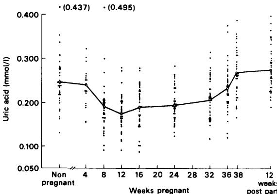
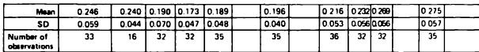
图3.14 一组健康女性在怀孕前、怀孕期间和怀孕后的血清尿酸分布（经Lind et al., 1984许可转载）。
Figure 3.14 Distribution of serum uric acid in a group of healthy women before, during and after pregnancy (reproduced from Lind et al., 1984, with permission).
3.5.2 两个连续变量之间的关系 3.5.2 Relation between two continuous variables
两个连续变量之间的关系可以通过散点图来表示。这是一种简单的图表，其中一个变量的值对照另一个变量的值进行绘制。例如，图3.15显示了表3.1中PImax数据与年龄相关的散点图。使用统计计算机程序可以非常简单地生成散点图。当有两个（或更多）个体具有相同的两个变量值时，应予以显示，最好是稍微移动一个点。一些软件包会打印出最多9个重合点的实际数量，因此“9”表示“9个或更多”。通过使用不同的绘图符号可以很容易地指示亚组。例如，在图3.15中，男性和女性可以用实心圆和空心圆表示。散点图是一种非常有用的描述性工具，并且通常作为正式统计分析的序曲而具有价值。图3.14中的图实际上是一个将连续变量和分类变量关联起来的散点图。
The relation between two continuous variables may be shown graphically in a scatter diagram. This is a simple graph in which the values of one variable are plotted against those of the other. For example, Figure 3.15 shows a scatter diagram of the PImax data of Table 3.1 related to age. Scatter diagrams are very simple to produce using statistical computer programs. When there are two (or more) individuals with identical values of both variables this should be shown, preferably by moving one point slightly. Some software packages print the actual number of coincident points up to 9, so that '9' means '9 or more'. It is easy to indicate subgroupings by using different plotting symbols. For example, in Figure 3.15 males and females could have been indicated by closed and open circles. The scatter diagram is a very useful descriptive tool, and is often valuable as a prelude to formal statistical analysis. The graph in Figure 3.14 is really a scatter diagram relating a continuous and a categorical variable.
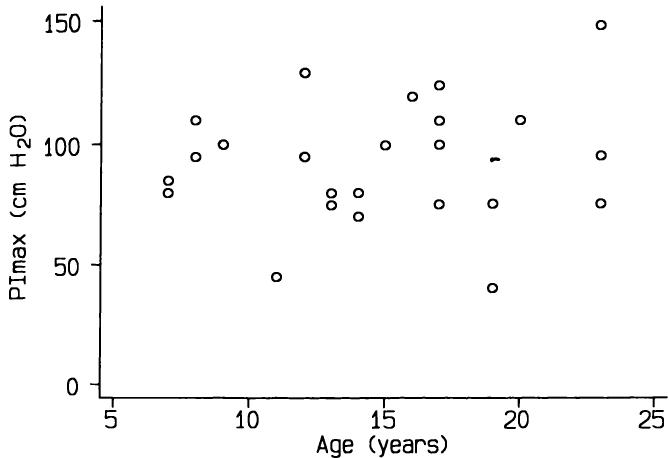
图3.15 PImax与年龄的散点图。
Figure 3.15 Scatter diagram of PImax by age.
3.6 数据转换的影响 3.6 THE EFFECT OF TRANSFORMING THE DATA
如果我们在某种程度上改变了数据，那么平均值和标准差也会不可避免地随之改变。在某些情况下，我们会改变或转换一整套数据，在这种情况下，对平均值和标准差的影响是可以预测的。
If we change our data in some way we will inevitably change the mean and standard deviation too. In some situations we alter, or transform, a complete set of data, in which case the effect on the mean and standard deviation may be predicted.
最简单的考虑情况是改变测量单位。如果我们将IgM数据从以 记录的值更改为以 记录的值，则每个观测值将是原来的1000倍。很容易看出，平均值也将是原来的1000倍，检查标准差的公式也会发现它也将是原来的1000倍。相反，如果我们将一个常数值加到或减去所有观测值，新数据的平均值将通过相同的减法或加法获得，但标准差不受影响。因此，对于以摄氏度记录的一组温度的平均值，我们必须加上273.15才能得到开尔文刻度上等效热力学温度的平均值。
The simplest case to consider is where we alter the units of measurement. If we change the IgM data from values recorded as to each observation will be 1000 times as large. It is easy to see that the mean will also be 1000 times bigger, and inspection of the formula for the standard deviation shows that it too will be 1000 times bigger. In contrast, if we add or subtract a constant value from all the observations, the mean of the new data is obtained by the same subtraction or addition but the standard deviation is unaffected. Thus to the mean of a set of temperatures recorded as degrees Celsius we must add 273.15 to give the mean of the equivalent thermodynamic temperature on the Kelvin scale.
任何基于乘法、除法、减法或加法的转换都称为线性转换，因为如果我们将新值与原始值绘制成图，会得到一条直线。转换后值的平均值和标准差可以通过简单的方式获得。然而，对于其他非线性转换，我们无法以这种方式获得转换后数据的平均值和标准差。非线性转换的例子包括取对数（如第3.4.4节所示）或平方根。因此，对数数据的平均值与原始数据平均值的对数
Any transformation based on multiplication, division, subtraction or addition is called a linear transformation, because if we plot the new values against the original values we get a straight line. The mean and standard deviation of the transformed values are obtained in a simple manner. For other, non- linear transformations, however, we cannot obtain the mean and standard deviation of the transformed data in this way. Examples of non- linear transformation are taking logarithms (illustrated in section 3.4.4) or square roots. Thus the mean of the log data is not the same as the log
不相同。数据转换的原因将在第7章中讨论。
of the mean of the raw data. The reasons for transforming data are considered in Chapter 7.
3.7 数据呈现 3.7 DATA PRESENTATION
3.7.1 数值呈现 3.7.1 Numerical presentation
数据汇总不应仅通过平均值（或中位数）来表示，还应提供一些变异性的指示。通常将标准差放在平均值后面的括号中。当这些值在文本中引用时，应避免使用平均值 的格式，例如“他们的平均舒张压为 ”。（事实上，一些医学期刊不再允许这种表示法。）更好的写法是 (SD 11.9)，因为这种格式清楚地表明了第二个数字是什么，也避免了平均值 到平均值 范围具有特定重要性的暗示。正如我们所见，平均值 的范围通常可以用来描述一组观测值中绝大多数（约 ）的分布。
Data summary should not be by the mean (or median) alone, but some indication of variability should also be provided. It is common to put the SD in brackets after the mean. When these values are quoted in text the format mean ,as in 'their mean diastolic blood pressure was , should be avoided. (Indeed several medical journals no longer allow this notation.) It is much better to write (SD 11.9) because this format makes it clear what the second number is and also avoids the implication that the range of values from mean to mean is of specific importance. As we have seen, it is the range mean which can often be used to describe the spread of the large majority (about ) of a set of observations.
数值呈现没有绝对的规则，但以下指导原则通常是合理的。通常，平均值应比原始数据多一位小数。平均值不应呈现出荒谬（且虚假）的“精确度”。例如，将一组婴儿的平均妊娠期精确到最近的10分钟显然是荒谬的。当将妊娠周数精确到小数点后3位时，就会出现这种情况。标准差通常应与平均值具有相同的精度，或者多一位小数。
It is not possible to give absolute rules for numerical presentation, but the following guidelines will generally be reasonable. It is usually appropriate to quote the mean to one extra decimal place compared with the raw data. The mean should not be presented to ridiculous (and spurious) 'accuracy'. For example, it is clearly absurd to quote the mean length of gestation of a group of babies to the nearest 10 minutes. This is done when quoting weeks of gestation to 3 decimal places. The standard deviation should usually be given to the same accuracy as the mean, or with one extra decimal place.
3.7.2 表格 3.7.2 Tables
是否将描述性数据放入表格中，将取决于变量和受试者组的数量。表3.5展示了一种推荐的呈现描述性数据（包括连续型和分类型数据）的方式。通常，将同类数据放在列中比放在行中更可取，因为眼睛更容易扫描列，但这并非总是可行。例如，在表3.5中，三个治疗组中相同变量的均值以行的形式显示，因为这样通常更自然。然而，均值和标准差（SDs）并排放置，清晰可辨，后者用括号括起来以增加清晰度。
Whether or not to put descriptive data in tables will depend on the number of variables and groups of subjects. Table 3.5 shows a recommended way of presenting descriptive data, both continuous and categorical. In general it is preferable to put data of a like kind in columns rather than rows as the eye can scan columns more easily, but this is not always possible. For example, in Table 3.5 the means of the same variables in the three treatment groups are shown in rows, as it is usually more natural that way. However, means and SDs are clearly distinguished side by side, with the latter in brackets for clarity.
表格也可以用来显示原始数据，尽管这仅在观测数量不多时才合理。在可能的情况下，按其中一个变量对数据进行排序会很有帮助—毕竟，患者就诊的顺序通常没有什么特殊之处。本书中的许多表格，例如表3.1，都是以这种方式排序的。
Tables can also be used to show raw data, although this is only reasonable when there are not too many observations. Where possible, it is helpful to order the data by one of the variables - after all, there is usually nothing special about the order in which the patients were seen. Many of the tables in this book, such as Table 3.1, have been ordered in this way.
3.7.3 图形 3.7.3 Graphs
关于何时适合使用图形而非表格，很难提供太多一般性建议。图形提供了显示比表格更多数据的机会，因此可能最适合那些难以在表格中显示的数据。例如，使用图形来显示两个或三个组中一个变量的均值和标准差是没有意义的。有些显示方式，例如直方图，本质上就是图形化的—图3.3比表3.2更清晰。可以将表格和图形的最佳特性结合起来，图3.14中就给出了一个例子。这种显示形式应该更频繁地使用。
It is difficult to offer much general advice about when it is appropriate to use a graph rather than a table. Graphs offer the opportunity to show much more data than could be shown in a table, and are thus probably most suited to data that cannot easily be displayed in a table. There is no point in using a graph to show, for example, the means and standard deviations of one variable in two or three groups. Some displays, such as histograms, are in essence graphical - Figure 3.3 is a much clearer display than Table 3.2. It is possible to combine the best features of a table and a figure, and an example was given in Figure 3.14. This form of display should be used more often.
散点图对于显示两个变量之间的关系特别有用。重要的是应显示所有数据点，这在存在重合点时可能会带来困难（参见第6.7节）。不同的符号可以用来表示数据的亚组。
Scatter diagrams are particularly useful for showing the relation between two variables. It is important that all the data points should be shown, which can pose difficulties when there are coincident points (see section 6.7). Different symbols can be used to indicate subgroups of the data.
图形是传达信息的一种非常有效的方式，但相同的数据可以用多种方式呈现，产生各种视觉效果。例如，图3.16展示了表3.6中数据的三种替代显示方式，该表显示了1960年至1980年伦敦每人每周平均面包消费量。在一个或多个图中可见的特征包括面包总消费量逐渐减少，白面包消费量下降幅度超过比例，以及棕色面包和全麦面包消费量在最后五年期间的上升。这些特征可能在表3.6中更容易看到。
Graphs are a very powerful way of getting a message across, but the same data can be portrayed in many ways, with a variety of visual effects. For example, Figure 3.16 shows three alternative displays of the data in Table 3.6 showing average amounts of bread consumed per person per week in London from 1960 to 1980. Features visible in one or more figures include a gradual reduction in total bread consumption, a more than proportionate fall in consumption of white bread, and a rise in consumption of brown and wholemeal bread in the last five year period. These features are probably more easily seen in Table 3.6.
表3.6 1960年至1980年伦敦面包消费量（每人每周克数）（Sivell和Wenlock，1983）
Table 3.6 Amounts of bread consumed in London from 1960 to 1980 (g per person per week) (Sivell and Wenlock, 1983)
| 面包类型 | 年份 | ||||
| 1960 | 1965 | 1970 | 1975 | 1980 | |
| 白面包 | 1040 | 975 | 915 | 785 | 620 |
| 棕面包 | 70 | 80 | 70 | 75 | 115 |
| 全麦面包 | 25 | 20 | 15 | 20 | 45 |
| 其他 | 155 | 80 | 85 | 75 | 105 |
| 总计 | 1290 | 1155 | 1080 | 955 | 880 |
| Type of bread | Year | ||||
| 1960 | 1965 | 1970 | 1975 | 1980 | |
| White | 1040 | 975 | 915 | 785 | 620 |
| Brown | 70 | 80 | 70 | 75 | 115 |
| Wholemeal | 25 | 20 | 15 | 20 | 45 |
| Other | 155 | 80 | 85 | 75 | 105 |
| Total | 1290 | 1155 | 1080 | 955 | 880 |
关于图形方法的一本优秀书籍是Tufte（1983）的著作，而Moses（1987）讨论了统计学中的图形。Tukey（1977）描述了许多用于描述性方法的创新思想。
An excellent book on graphical methods in general is that by Tufte (1983), and graphs for statistics are discussed by Moses (1987). Many innovative ideas for descriptive methods are described by Tukey (1977).
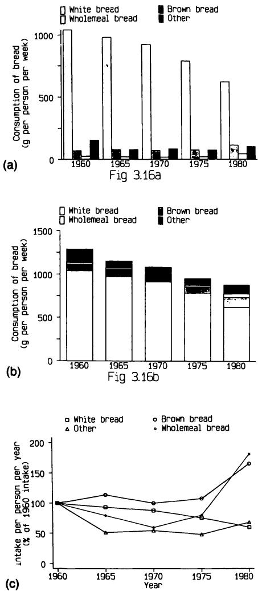
习题 EXERCISES
3.1 下页表格显示了65名接受金硫苹果酸钠（SA）治疗的类风湿关节炎患者的一些数据（Ayesh 等，1987）。表格中显示了SA的总剂量，以及磺氧化指数（SI）的值，该指数衡量将有机二价烷基硫化物转化为相应亚砜形式的能力。患者被分为28名无主要药物不良反应者和37名有主要药物不良反应者。
3.1 The table overleaf shows some data for 65 patients with rheumatoid arthritis treated with sodium aurothiomalate (SA) (Ayesh et al., 1987). The total dose of SA is shown, together with values of the sulphoxida- tion index (SI), which measures the capacity to convert organic divalent alkyl sulphide to its corresponding sulphoxide form. The patients have been separated into 28 without and 37 with major adverse reactions to the drug.
(a) 一些SI值被表示为 。这类观测值有什么专有名称？
(a) Some values of SI are given as . What is the name given to observations like this？
(b) 在每个组中绘制SI的直方图有什么困难？这些分布的形状如何？
(b) What is the difficulty about drawing histograms of SI in each group？ What shape are the distributions？
(c) 请给出两个理由，说明为什么计算中位数而非均值来描述平均SI值更为可取。
(c) Give two reasons why it is preferable to calculate the median rather than the mean to describe the average SI value.
(d) 计算每组患者的SI中位数。（这应该用时不到十秒。）
(d) Obtain the median SI for each group of patients. (This should take less than ten seconds.)
(e) 计算有不良反应组的SA总剂量中位数。
(e) Obtain the median total dose of SA for the group with adverse reactions.
(f) 绘制茎叶图以比较两组的年龄分布。
(f) Produce stem-and-leaf diagrams to compare the age distributions in the two groups.
(g) 这些数据是否支持有不良反应的患者平均年龄大于无不良反应患者的观点？
(g) Do the data support the idea that patients experiencing adverse reactions were on average older than those without adverse reactions？
| 无不良反应 | Without adverse reactions | 有不良反应 | With adverse reactions | ||||||||||||
| 年龄 | SA总剂量 (mg) | SI | Age | Total dose of SA (mg) | SI | 年龄 | SA总剂量 (mg) | SI | Age | Total dose of SA (mg) | SI | ||||
| 1 | 44 | 1560 | 1.0 | 1 | 53 | 360 | 2.0 | ||||||||
| 1 | 44 | 1560 | 1.0 | 1 | 53 | 360 | 2.0 | ||||||||
| 2 | 65 | 1310 | 1.2 | 2 | 74 | 2010 | 2.0 | ||||||||
| 2 | 65 | 1310 | 1.2 | 2 | 74 | 2010 | 2.0 | ||||||||
| 3 | 58 | 850 | 1.2 | 3 | 29 | 1390 | 2.0 | ||||||||
| 3 | 58 | 850 | 1.2 | 3 | 29 | 1390 | 2.0 | ||||||||
| 4 | 57 | 1250 | 1.7 | 4 | 53 | 660 | 3.0 | ||||||||
| 4 | 57 | 1250 | 1.7 | 4 | 53 | 660 | 3.0 | ||||||||
| 5 | 51 | 950 | 1.8 | 5 | 67 | 1135 | 3.5 | ||||||||
| 5 | 51 | 950 | 1.8 | 5 | 67 | 1135 | 3.5 | ||||||||
| 6 | 64 | 850 | 1.8 | 6 | 67 | 510 | 5.3 | ||||||||
| 6 | 64 | 850 | 1.8 | 6 | 67 | 510 | 5.3 | ||||||||
| 7 | 33 | 1200 | 1.9 | 7 | 54 | 410 | 5.7 | ||||||||
| 7 | 33 | 1200 | 1.9 | 7 | 54 | 410 | 5.7 | ||||||||
| 8 | 61 | 1390 | 2.0 | 8 | 51 | 910 | 6.5 | ||||||||
| 8 | 61 | 1390 | 2.0 | 8 | 51 | 910 | 6.5 | ||||||||
| 9 | 49 | 1450 | 2.3 | 9 | 57 | 360 | 13.0 | ||||||||
| 9 | 49 | 1450 | 2.3 | 9 | 57 | 360 | 13.0 | ||||||||
| 10 | 67 | 3300 | 2.8 | 10 | 62 | 1260 | 13.0 | ||||||||
| 10 | 67 | 3300 | 2.8 | 10 | 62 | 1260 | 13.0 | ||||||||
| 11 | 39 | 2760 | 2.8 | 11 | 51 | 560 | 13.9 | ||||||||
| 11 | 39 | 2760 | 2.8 | 11 | 51 | 560 | 13.9 | ||||||||
| 12 | 42 | 860 | 3.4 | 12 | 68 | 1135 | 14.7 | ||||||||
| 12 | 42 | 860 | 3.4 | 12 | 68 | 1135 | 14.7 | ||||||||
| 13 | 35 | 1810 | 3.4 | 13 | 50 | 1410 | 15.4 | ||||||||
| 13 | 35 | 1810 | 3.4 | 13 | 50 | 1410 | 15.4 | ||||||||
| 14 | 31 | 1310 | 3.8 | 14 | 38 | 1110 | 15.7 | ||||||||
| 14 | 31 | 1310 | 3.8 | 14 | 38 | 1110 | 15.7 | ||||||||
| 15 | 37 | 1250 | 3.8 | 15 | 61 | 960 | 16.6 | ||||||||
| 15 | 37 | 1250 | 3.8 | 15 | 61 | 960 | 16.6 | ||||||||
| 16 | 43 | 1210 | 4.2 | 16 | 59 | 1310 | 16.6 | ||||||||
| 16 | 43 | 1210 | 4.2 | 16 | 59 | 1310 | 16.6 | ||||||||
| 17 | 39 | 1460 | 4.9 | 17 | 68 | 910 | 16.6 | ||||||||
| 17 | 39 | 1460 | 4.9 | 17 | 68 | 910 | 16.6 | ||||||||
| 18 | 53 | 2310 | 5.4 | 18 | 44 | 1235 | 22.0 | ||||||||
| 18 | 53 | 2310 | 5.4 | 18 | 44 | 1235 | 22.0 | ||||||||
| 19 | 44 | 1360 | 5.9 | 19 | 57 | 2950 | 22.3 | ||||||||
| 19 | 44 | 1360 | 5.9 | 19 | 57 | 2950 | 22.3 | ||||||||
| 20 | 41 | 1910 | 6.2 | 20 | 49 | 360 | 33.2 | ||||||||
| 20 | 41 | 1910 | 6.2 | 20 | 49 | 360 | 33.2 | ||||||||
| 21 | 72 | 910 | 12.0 | 21 | 49 | 1935 | 47.0 | ||||||||
| 21 | 72 | 910 | 12.0 | 21 | 49 | 1935 | 47.0 | ||||||||
| 22 | 61 | 1410 | 18.8 | 22 | 63 | 1660 | 61.0 | ||||||||
| 22 | 61 | 1410 | 18.8 | 22 | 63 | 1660 | 61.0 | ||||||||
| 23 | 48 | 2460 | 47.0 | 23 | 29 | 435 | 65.0 | ||||||||
| 23 | 48 | 2460 | 47.0 | 23 | 29 | 435 | 65.0 | ||||||||
| 24 | 59 | 1350 | 70.0 | 24 | 53 | 310 | 65.0 | ||||||||
| 24 | 59 | 1350 | 70.0 | 24 | 53 | 310 | 65.0 | ||||||||
| 25 | 72 | 810 | >80.0 | 25 | 53 | 310 | >80.0 | ||||||||
| 25 | 72 | 810 | >80.0 | 25 | 53 | 310 | >80.0 | ||||||||
| 26 | 59 | 1460 | >80.0 | 26 | 49 | 410 | >80.0 | ||||||||
| 26 | 59 | 1460 | >80.0 | 26 | 49 | 410 | >80.0 | ||||||||
| 27 | 71 | 760 | >80.0 | 27 | 42 | 690 | >80.0 | ||||||||
| 27 | 71 | 760 | >80.0 | 27 | 42 | 690 | >80.0 | ||||||||
| 28 | 53 | 910 | >80.0 | 28 | 44 | 910 | >80.0 | ||||||||
| 28 | 53 | 910 | >80.0 | 28 | 44 | 910 | >80.0 | ||||||||
| 29 | 59 | 1260 | >80.0 | ||||||||||||
| 29 | 59 | 1260 | >80.0 | ||||||||||||
| 30 | 51 | 1260 | >80.0 | ||||||||||||
| 30 | 51 | 1260 | >80.0 | ||||||||||||
| 31 | 46 | 1310 | >80.0 | ||||||||||||
| 31 | 46 | 1310 | >80.0 | ||||||||||||
| 32 | 46 | 1350 | >80.0 | ||||||||||||
| 32 | 46 | 1350 | >80.0 | ||||||||||||
| 33 | 41 | 1410 | >80.0 | ||||||||||||
| 33 | 41 | 1410 | >80.0 | ||||||||||||
| 34 | 39 | 1460 | >80.0 | ||||||||||||
| 34 | 39 | 1460 | >80.0 | ||||||||||||
| 35 | 62 | 1535 | >80.0 | ||||||||||||
| 35 | 62 | 1535 | >80.0 | ||||||||||||
| 36 | 49 | 1560 | >80.0 | ||||||||||||
| 36 | 49 | 1560 | >80.0 | ||||||||||||
| 37 | 53 | 2050 | >80.0 | ||||||||||||
| 37 | 53 | 2050 | >80.0 | ||||||||||||
3.2 (a) 图3.1是否表明职业飞行员比其他群体更可能发生航空事故？
3.2 (a) Does Figure 3.1 indicate that professional pilots are more likely to have an aviation accident than other groups？
下表显示了图3.1中绘制的数据，以及每10万小时近期飞行时间的航空事故率（Booze, 1977）。
The following table shows the data that were plotted in Figure 3.1, together with the aviation accident rates per 100000 hours of recent flight time (Booze, 1977).
| 事故数量 | 每千人比率* | 每10万小时比率 | |
| 专业飞行员 | 1302 | 15.9 | 0.2 |
| 律师 | 57 | 11.0 | 1.5 |
| 农民 | 166 | 10.1 | 1.3 |
| 销售代表 | 137 | 9.0 | 1.2 |
| 医生 | 76 | 8.7 | 1.8 |
| 机械师和修理工 | 44 | 6.9 | 1.5 |
| 警察和侦探 | 48 | 6.6 | 1.8 |
| 经理和行政人员 | 643 | 6.0 | 0.7 |
| 工程师 | 125 | 4.7 | 1.1 |
| 教师 | 43 | 4.2 | 1.1 |
| 家庭主妇 | 29 | 3.7 | 3.2 |
| 在校学生 | 188 | 3.2 | 3.7 |
| 军人 | 111 | 1.6 | 0.7 |
| Number of accidents | Rate per 1000* | Rate per 100000 hr | |
| Professional pilots | 1302 | 15.9 | 0.2 |
| Lawyers | 57 | 11.0 | 1.5 |
| Farmers | 166 | 10.1 | 1.3 |
| Sales representatives | 137 | 9.0 | 1.2 |
| Physicians | 76 | 8.7 | 1.8 |
| Mechanics and repairmen | 44 | 6.9 | 1.5 |
| Policemen and detectives | 48 | 6.6 | 1.8 |
| Managers and administrators | 643 | 6.0 | 0.7 |
| Engineers | 125 | 4.7 | 1.1 |
| Teachers | 43 | 4.2 | 1.1 |
| Housewives | 29 | 3.7 | 3.2 |
| Academic students | 188 | 3.2 | 3.7 |
| Armed Forces Members | 111 | 1.6 | 0.7 |
*在该特定职业中
*in the specified occupation
(b) 每10万小时的比率也可以制成条形图。从这样的图表，或者从表中所示的数据来看，哪两组飞行员的事故最多？为什么这两组数据会给出不同的答案？（散点图有助于查看两者之间的关系。）
(b) The rates per 100000 hours can also be made into a bar diagram. From such a diagram, or from the figures shown in the table, which two groups of pilots had most accidents？ Why do the two sets of figures give different answers？ (A scatter diagram is useful to see the relation between the two.)
3.3 使用第3.4.2节中给出的计算方法，计算用于构建图3.12中箱线图的百分位数。
3.3 Calculate the centiles used to construct the box- and- whisker plot in Figure 3.12 using the method of calculation given in section 3.4.2.